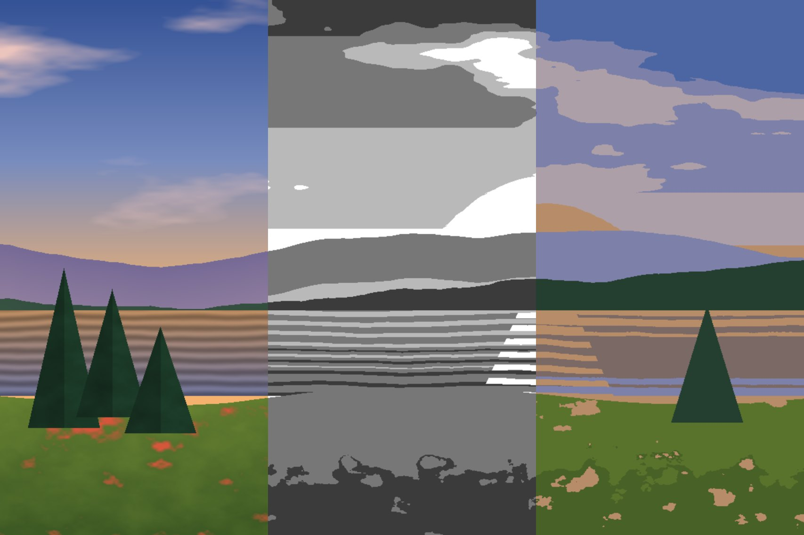
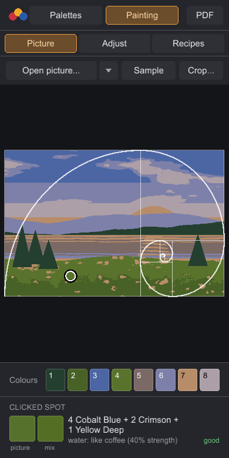

See the values and colour masses of a photo, lay a composition grid over it, and get a recipe for every colour, mixed from the paints you own. For watercolour, acrylic and oil.
Open the web appRuns in the browser on phones, tablets and computers. Install it from the browser to use it offline.
{{release_line}} The downloads are not signed: see the installation notes for the one-time step on macOS and Windows.

Build palettes from 45 common pigments or enter your own. Each one shows how its paints mix in pairs and how they lighten with water or white.
Pick a photo, crop it to the shape of your canvas, and lay a rule of thirds, golden ratio, Fibonacci spiral or square grid over it.
Reduce the picture to 2–10 value levels or 2–24 flat colour masses, or to a contour drawing, and see how much of the picture each one covers.
Every colour level and every spot you tap gets a recipe in parts of your own paints, with how much to thin it and how close the mix comes. Take it all to the easel as a PDF.

On a phone or tablet the web app shows one pane at a time: the picture with the recipe of the spot you tapped, the picture settings, or all the recipes. Your palettes are kept on the device.
The app is free and has no ads or accounts. If it helps your painting, you can leave a tip – it keeps the work going.
Support on Ko-fi